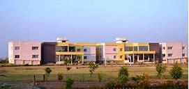

Gwalior Campus Walkthrough The campus houses the closely knit and integrated academic and administration blocks, the central computer lab, library, auditorium, management building and the workshop. The fantastic facade of the main building, the Doric columns, beautiful balusters, spacious corridors, contribute to the classic look of the campus.
